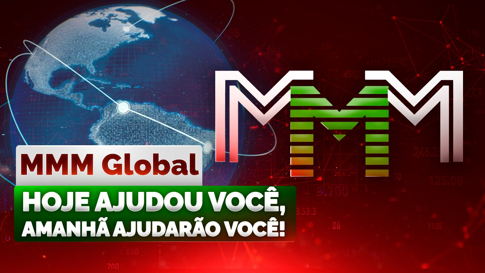

Registrando-se no bot do Telegram: @Mavrodi_robot

O que é o MMM? Uma união voluntária e informal de pessoas, muitos e muitos milhões de pessoas simples e comuns do mundo todo. São pessoas das mais variadas idades, nacionalidades, religiões, convicções e posições sociais. Homens e mulheres. Europeus e americanos, russos e australianos, chineses, Os brasileiros e indianos. Brancos, negros, amarelos... Mas todos eles são unidos por uma coisa só: o desejo de ajudar uns aos outros! Fazer o bem. "Amai o próximo"! Ajude-o. Não fale – faça!
Em sua essência, o MMM é uma organização beneficente em sua forma mais pura e original, limpa de toda a escória de formalidades desnecessárias e de burocracias que matam tudo o que é vivo e que são absolutamente inadequadas em um assunto tão sagrado e puro quanto a caridade e a ajuda mútua. Em nosso mundo moderno, abafado e excessivamente regulamentado, um mundo de desconfiança e suspeita generalizadas, todos esses contratos, assinaturas e carimbos parecem algo indispensável e até óbvio: "Mas como seria diferente? Senão, vão me enganar. Se não houver contrato. Como alguém pode não enganar, se tiver a oportunidade completa? Com certeza vai enganar". Sim, com certeza. Se você esperar isso dele. Ofendê-lo com desconfiança. Ao propor um contrato, você está basicamente dizendo à pessoa: "Eu não confio em você, você é um ladrão e um vigarista. E, para que você não me engane, firmo um contrato com você, onde descrevo em inúmeros parágrafos e cláusulas todos os casos e cenários possíveis e impossíveis. Agora tente me enganar!". Você já parou para pensar? Ao fazer isso, você dá à pessoa o direito moral de enganá-lo. Se conseguir. Se encontrar uma brecha em seus inúmeros parágrafos e cláusulas. Basicamente, isso também faz parte do contrato. Essa brecha. Encontre – e você está certo. Tudo estritamente conforme o contrato! E de moralidade aqui não se fala nem um pouco. O homem é o lobo do homem! Que moralidade, quando se trata de DINHEIRO?! Não me façam rir, senhores.
No MMM, nada disso existe em princípio. Nem de perto! O MMM é um retorno às origens, aos valores humanos verdadeiros, globais e autênticos. É um tipo de sistema de ajuda mútua inicial, "verdadeiro", honesto e justo. Como qualquer pessoa imagina em seu coração.
Por exemplo, na família. Você não exige carimbos e assinaturas, exige? Tudo é baseado na confiança, e não em "garantias e obrigações", certo? (Caso contrário, como viver?) Exatamente da mesma forma aqui. O MMM é, de certa forma, uma gigantesca caixinha virtual coletiva abstrata, na qual todos depositam dinheiro. E depois retiram conforme a necessidade. Não arrancam, não agarram com as duas mãos (mãos enormes! garras! vorazes! :-)), mas simplesmente – retiram. Porque, na verdade, uma pessoa não precisa de tanto dinheiro assim. O importante é a consciência de que ele está lá. A confiança no amanhã! O MMM justamente dá às pessoas essa confiança. Torna a pessoa livre! Financeiramente. Presenteia-a com uma sensação incomparável de solidariedade. A consciência de que, em um momento difícil, você será ajudado. Com certeza será ajudado!! E isso significa muito, mas muito mesmo, para uma pessoa. Quase tudo, na verdade! "Hoje você ajuda – amanhã ajudam você!" Esse é o lema do nosso Sistema.
E sabem? Vou contar um segredo. Prestar ajuda a pessoas completamente desconhecidas também é muito prazeroso. Muitas vezes, até mais prazeroso do que recebê-la. Não acredita? Então experimente! Vai ver.
(Afinal, a pessoa gosta de se sentir boa e gentil – gosta! Isso está nela desde o início. E graças a Deus. :-))
Certo. Chega de lirismo. Vamos aos negócios. Senão ficamos só conversando. :-))
Então. Ao entrar no MMM, você deve entender o seguinte. As pessoas aqui praticam a caridade, prestam ajuda umas às outras. Sem-qualquer-garantia-ou-promessa-de-retorno! Não porque querem obter algum tipo de vantagem, lucrar com dividendos etc., mas simplesmente assim. Sem motivo. Porque são boas e gentis. Porque são – Pessoas. Porque querem fazer o bem, sentem uma necessidade urgente disso. Ajudar os necessitados, os socialmente desprotegidos, ajudar quem está passando mal agora, pior do que elas mesmas. Essa é uma necessidade perfeitamente natural de qualquer ser humano, fazer o bem, não é? Caso contrário, ele já não é mais um Ser Humano.
Consequentemente! Aqui não há nenhuma garantia ou promessa. De vantagens patrimoniais ou coisas do tipo. Nenhuma! Absolutamente! Nem de forma explícita, nem implícita. Nenhuma vantagem patrimonial é prometida a você aqui! (Entenderam todos? Ou preciso repetir? :-)) O fato de você ter prestado ajuda a alguém não significa, de forma alguma, que ela será prestada a você depois. Talvez sim, talvez não. Caridade! É um assunto estritamente voluntário. Se quiserem, ajudam. Mas só se quiserem. Portanto, não se deve entender o lema do Sistema – "Hoje você ajuda – amanhã ajudam você!" – de forma literal. Como se a ajuda fosse obrigatória. Nada disso! Não há nada de obrigatório aqui. Ele é metafórico. E não contém promessas. No MMM, elas simplesmente não existem. Repito pela centésima, milésima vez! Não, não e não! Não há promessas aqui! Agora, sempre e para todo o sempre. Amém.
Em outras palavras. Se você veio aqui sem intenções puras, não com o objetivo de fazer o bem às pessoas, de praticá-lo! – simplesmente assim! – de forma desinteressada, alegre e sincera! – mas veio com o objetivo de agarrar tudo, por ganância, por algum tipo de "lucro" e vantagem – este não é o seu lugar. Pronto! Tudo de bom e até a próxima. Mas não neste mundo.
Certo. Agora. Vamos em frente.
Como tudo funciona? "Funciona" no sentido de que qualquer comunidade, mesmo que informal, tem suas próprias regras de comportamento, únicas e exclusivas. É isso que a torna uma comunidade. Única e diferente de todas as outras. É sobre isso que vamos falar agora.
Então, quais são essas "regras"? Resumidamente, cada participante tem uma espécie de classificação (Mavro abstratos), que determina o grau de sua utilidade para o Sistema. O valor da classificação determina o valor da ajuda que o participante pode solicitar. Bem, ele pode, em princípio, solicitar qualquer valor, mas é improvável que alguém lhe preste ajuda se sua classificação for insuficiente. Uma pessoa, digamos, um homem adulto e saudável, que acabou de ajudar alguém com um dólar e logo em seguida solicita ajuda para si... de um milhão! Isso parece... um pouco... estranho. Você entende. Até a caridade é seletiva. É melhor eu transferir meu suado dinheiro para uma senhorinha que ajudou alguém no mês passado com sua moedinha e agora pede às pessoas um apoio aproximadamente igual – ou talvez um pouco maior!
Do que depende a classificação? Do grau de utilidade do participante para o Sistema, repito. E essa utilidade é determinada principalmente pelo valor que ele está disposto a prestar (ou já prestou) como ajuda a outros participantes do Sistema. E também pelo comportamento do participante. Se ele declara antecipadamente que não vai solicitar ajuda por vários meses, que está tudo bem com ele, então, obviamente, sua classificação presumivelmente aumentará. Afinal, durante todo esse tempo, o dinheiro dele estará ajudando outras pessoas.
Com o tempo, a classificação geralmente aumenta. O que também faz sentido. Quanto mais tempo uma pessoa não solicita ajuda para si, maior valor ela representa para o Sistema. A partir de convites para o sistema de novas pessoas que prestam ajuda, sua classificação também aumentará presumivelmente. Assim, você beneficia a causa comum. Pode, no entanto, cair. Se, por exemplo, simplesmente não houver dinheiro no Sistema. Mas, de qualquer forma, você pode ler com mais detalhes sobre classificações nas "regras". Aqui, um aprofundamento adicional em detalhes – que são, na verdade, puramente técnicos – dificilmente seria apropriado. A ideia geral está clara, e os detalhes você lê depois.
Por que um esquema tão complicado e... pouco elegante, digamos assim? Para um assunto tão simples e claro como a caridade? Parecia que, bem, se as pessoas querem ajudar umas às outras – que ajudem. Conforme suas possibilidades e sem todas essas regras e classificações. Por que complicar? E tornar tudo tão complexo? Vocês mesmos disseram: "retorno às origens!.. como na família!.. contrato é uma ofensa à desconfiança!.."
"Sem todas essas regras e classificações". Amanhã mesmo aparece um espertinho, o mais infeliz e necessitado, que envia a todos pedidos chorosos (bem, súplicas :-)), esvazia completamente o caixa e some sem deixar rastro. E aí? Sim, família. Mas até em família tem o seu "patinho feio". Sim, confiança. Porém: confie, mas confira. Sabedoria das eras. Introduza classificações. Realmente não temos contratos e papéis, mas para que as pessoas pelo menos vejam quem está pedindo ajuda a elas. Que tipo de pessoa é. :-)) Isso é normal? E aí que cada um decida por si. Prestar ajuda ou não. A caridade, sem dúvida, é voluntária.
E, de qualquer forma. O objetivo era criar um Sistema funcional. Uma organização beneficente informal verdadeira e viva (e não apenas no papel). Esse objetivo foi alcançado. Pronto! Alguma pergunta? Você consegue fazer melhor? Elegante e bonito? E sem todas essas classificações? Então, boa sorte e vá em frente. Tente. O MMM funciona de verdade e ajuda pessoas. Pessoas concretas, vivas. Milhões de pessoas! Pronto, ponto final. :-))
P.S. Também é possível considerar o MMM como uma espécie de banco popular p2p. Honesto e justo, sem juros abusivos. Sem essa maldita "usura". Por que a cobram? A usura foi condenada e desprezada em todos os tempos e entre todos os povos. E agora isso é norma. Um empresário pega um empréstimo no banco. Por que cobram juros dele? Ele quer criar algo útil para a sociedade, para toda a sociedade, inclusive para os banqueiros? Deveriam dar-lhe benefícios por isso, e não esfolá-lo vivo!
No entanto, enfatizo especialmente que é "uma espécie de". O MMM não se enquadra na definição formal de atividade bancária. No MMM não há "depósitos", não há condições de prazo ou reembolso. Além disso, todo o dinheiro está nas contas dos próprios participantes. Portanto, não. Formalmente, o MMM não é um banco. E, consequentemente, não são necessárias licenças para sua atividade. Todas as licenças já existem nos bancos cujos serviços os participantes utilizam.
Registrando-se no bot do Telegram: @Mavrodi_robot